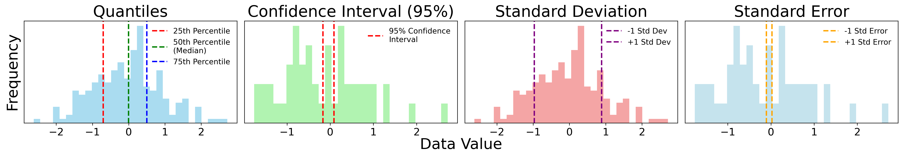
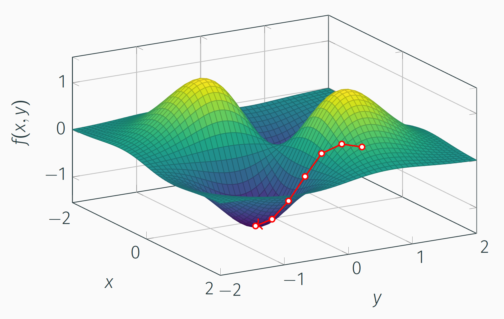
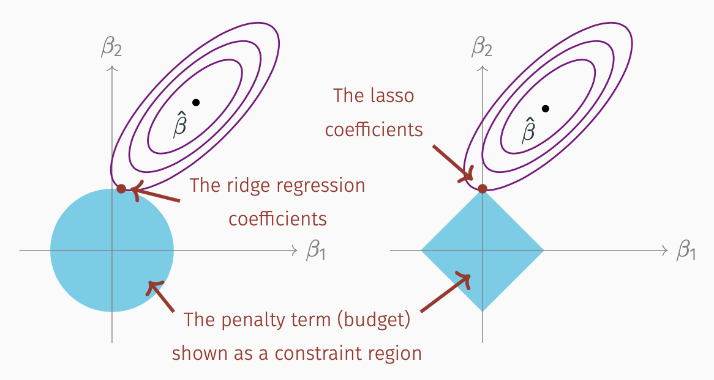
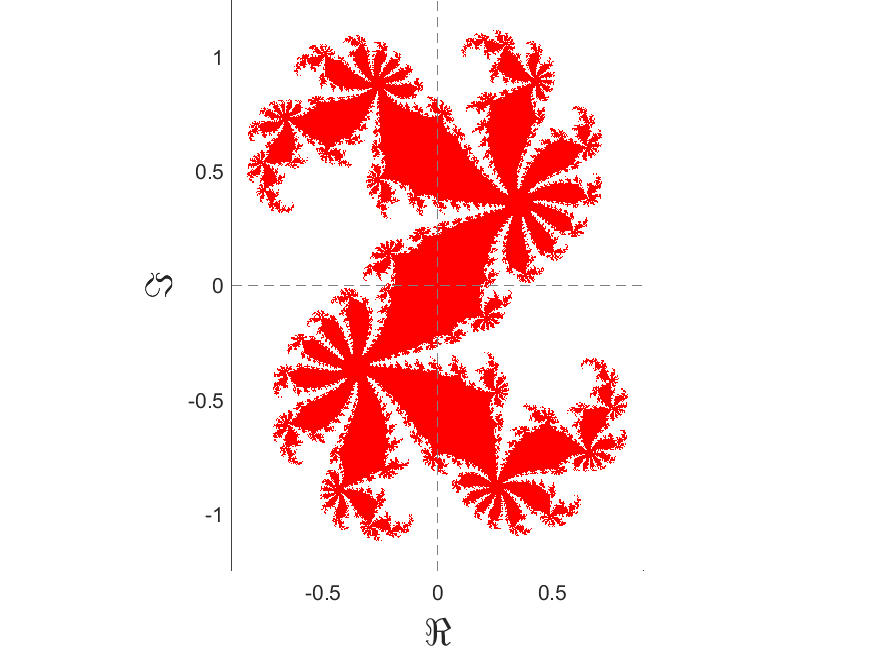
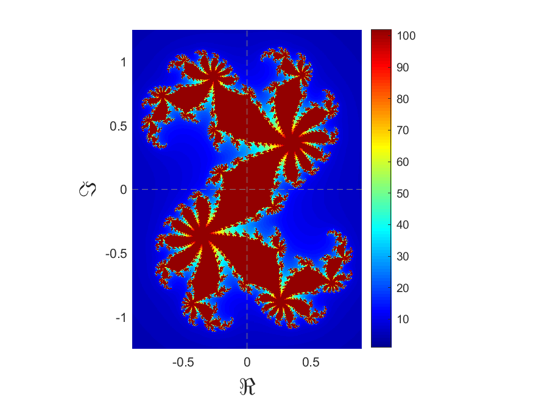
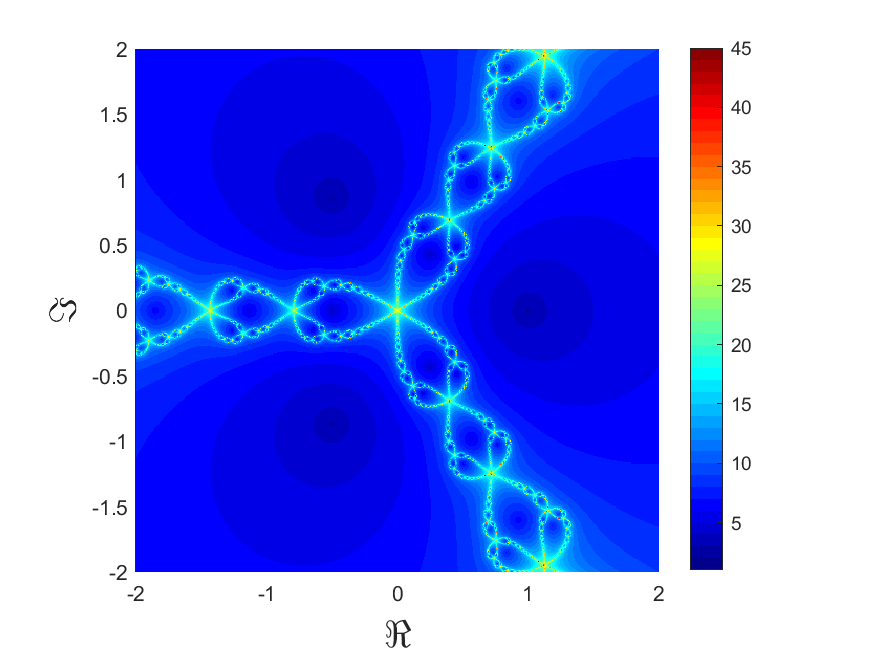
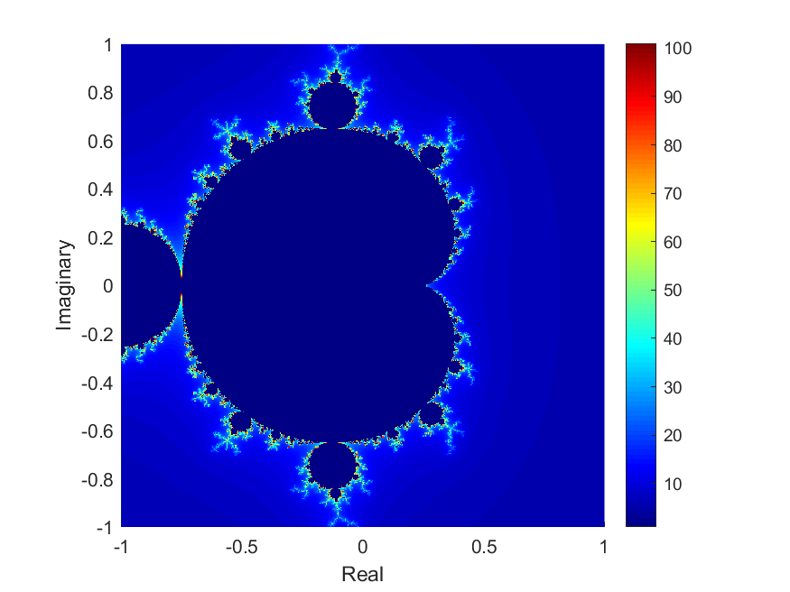

This interactive choropleth map shows the results of a cluster analysis on Bay Area traffic density data. Built for a project at LBNL supporting FHWA policy and resource allocation for EV charging. Made in RStudio using Leaflet.

From a data science seminar series I gave colleagues. Helpful reminder of the differences between quantiles, CIs, SDs and SEs. Recall that quantiles divide a data set into equal intervals, giving us a sense of how the data is spread out. 4-quantiles are quartiles, 10-quantiles are deciles, 100-quantiles are percentiles, etc. Confidence intervals provide a range within which we expect the true population parameter to fall, based on a sample. Standard deviation measures the spread of data points around the mean. Standard error is the standard deviation of the sample mean. It estimates the variability of the sample mean from the true population mean. It decreases as the sample size increases, unlike standard deviation which remains constant for a population.

Also from a data science seminar series I gave colleagues. Made in TikZ, an illustration of gradient descent. Function is \(7xy/e^{(x^2 + y^2)}\); path calculated in Python. This shows how a computer can find the lowest point of a bumpy landscape without being able to see the whole thing at once, like walking downhill in the fog, only feeling the slope right under your feet. At each step, it checks which direction is "downhill" from where it's standing and takes a step that way, then repeats. The red dots trace out the path it took, step by step, as it settles into a valley (the low point of the function). This is basically how machine learning models "learn." They're just walking downhill on some (much higher-dimensional) landscape, adjusting themselves a little at a time until they land somewhere good.

Data science seminar: thrice as nice! Also made in TikZ, and adapted from The Elements of Statistical Learning (excellent resource!) Constraint geometry of Ridge and lasso, variants of classic ordinary least squares (OLS) linear regression. These are tricks used to keep prediction models from overfitting (that is, from getting so obsessed with the exact data they were trained on that they stop working well on new data). The purple ovals show all the ways you could set the model's internal numbers, ranked by how well they fit the training data (the center dot is the "best fit," and it gets worse the further out you go). Left untouched, the model would just pick the absolute best fit and run with it. But we deliberately restrict it: the blue shape is a boundary the model's numbers aren't allowed to cross, forcing it to settle for a slightly-worse-but-safer fit inside the shape (marked with the arrow) instead of the unrestricted best fit. The shape of the boundary actually matters: because the diamond has sharp corners sitting right on the axes, the winning point often lands exactly on a corner, meaning one of the model's numbers gets pushed to exactly zero, effectively deciding that factor doesn't matter at all. The circle doesn't have corners, so it shrinks numbers down but rarely zeroes them out completely.

Fractals are shapes that look "rough" or infinitely detailed no matter how far you zoom in. In other words, they don't have integer dimensions, but fractional ones. Regular shapes like circles and squares don't do this. This one is called a filled Julia set. To make it, you take a point, run it through a simple repeating math rule, and check what happens: does it wander off toward infinity, or does it stay trapped in a bounded region forever? The red points are the "trapped" ones. The wild, spiky boundary between red and blue is where the fractal detail lives. Zoom into that edge and you'll keep finding more detail forever.

Same Julia set, but the colors show how many iterations it took for a point to escape (rather than get trapped): blue means it escaped fast, red means it took a long time to decide, hovering near the boundary.

This shows a technique (Newton's method) for finding the solution(s) to an equation by guessing, checking how close you are, then using that to make a better guess — repeating until you land on the answer. Here it's hunting for the 3 solutions to a specific equation. Every point on the image is a different starting guess, colored by how many guesses it took to converge to an answer. Dark blue = got there fast (great starting guess), other colors = took longer. The trippy swirling patterns show that even guesses very close to each other can take wildly different numbers of tries. Small changes in your starting point can lead to very different outcomes.

The Mandelbrot Set! My favorite fractal, and the reason I decided to study math (that, and the book Chaos by James Gleick). Each point on this image represents one simple math rule being tested: repeat it over and over starting from zero, and see whether the results stay small and contained (navy) or blow up toward infinity (colors, showing how fast they blew up). Zoom into the edge and you'll find endless swirls, spirals, and even tiny copies of the whole shape. The same complexity at every scale, forever. Made in good ol' MATLAB.